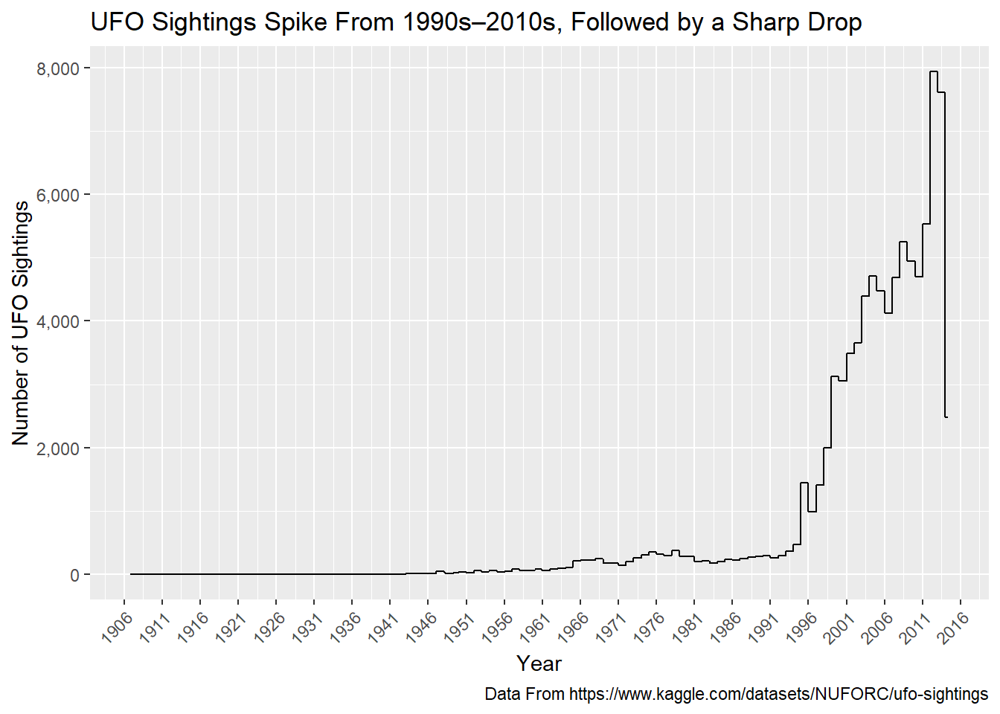
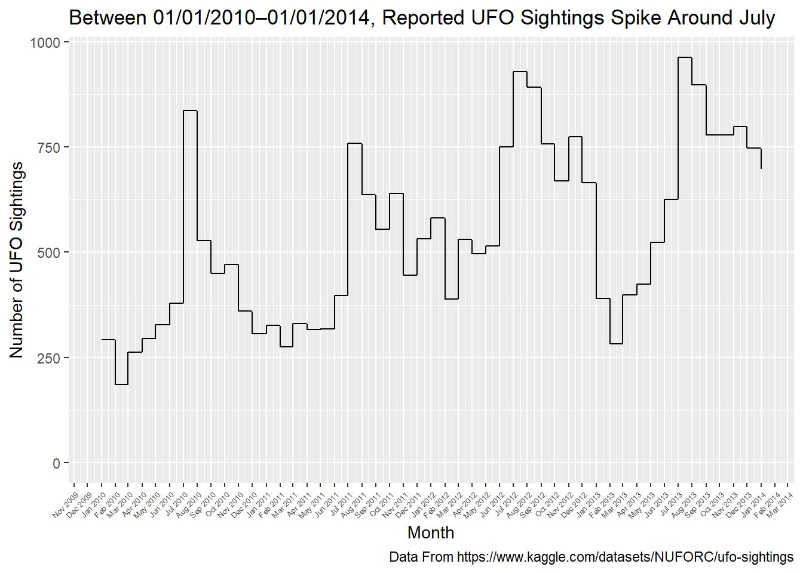
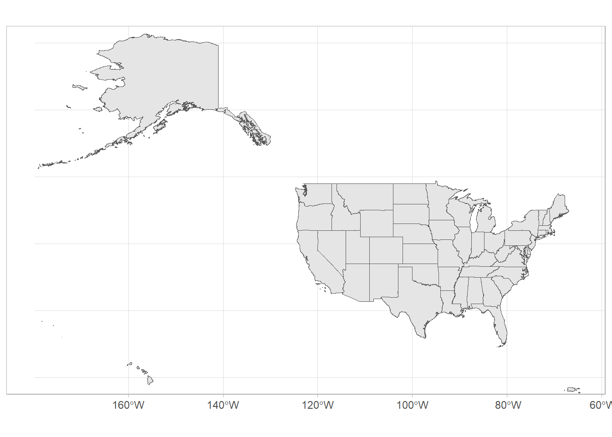
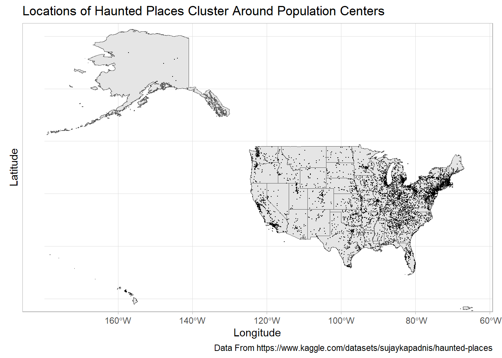

Quarto enables you to weave together content and executable code into a finished document. To learn more about Quarto see https://quarto.org.
library(tidyverse)
Warning: package 'ggplot2' was built under R version 4.3.3
── Attaching core tidyverse packages ──────────────────────── tidyverse 2.0.0 ──
✔ dplyr 1.1.3 ✔ readr 2.1.4
✔ forcats 1.0.0 ✔ stringr 1.5.0
✔ ggplot2 3.5.0 ✔ tibble 3.2.1
✔ lubridate 1.9.2 ✔ tidyr 1.3.0
✔ purrr 1.0.2
── Conflicts ────────────────────────────────────────── tidyverse_conflicts() ──
✖ dplyr::filter() masks stats::filter()
✖ dplyr::lag() masks stats::lag()
ℹ Use the conflicted package (<http://conflicted.r-lib.org/>) to force all conflicts to become errors
library(dplyr)library(readr)library(readxl)library(haven) #for loading other datafiles (SAS, STATA, SPSS, etc.)#for plotting timelibrary(ggplot2) # if you have not installed this package, please install it.library(lubridate)library(gganimate)
Warning: package 'gganimate' was built under R version 4.3.2
library(gifski)
Warning: package 'gifski' was built under R version 4.3.2
library(hrbrthemes)
Warning: package 'hrbrthemes' was built under R version 4.3.2
NOTE: Either Arial Narrow or Roboto Condensed fonts are required to use these themes.
Please use hrbrthemes::import_roboto_condensed() to install Roboto Condensed and
if Arial Narrow is not on your system, please see https://bit.ly/arialnarrow
library(scales)
Warning: package 'scales' was built under R version 4.3.3
Attaching package: 'scales'
The following object is masked from 'package:purrr':
discard
The following object is masked from 'package:readr':
col_factor
Linking to GEOS 3.11.2, GDAL 3.7.2, PROJ 9.3.0; sf_use_s2() is TRUE
library(maps)
Attaching package: 'maps'
The following object is masked from 'package:purrr':
map
library(rnaturalearth)
Support for Spatial objects (`sp`) will be deprecated in {rnaturalearth} and will be removed in a future release of the package. Please use `sf` objects with {rnaturalearth}. For example: `ne_download(returnclass = 'sf')`
library(rnaturalearthdata)
Attaching package: 'rnaturalearthdata'
The following object is masked from 'package:rnaturalearth':
countries110
datetime city state country shape
1 1906-11-11 wien (austria) other
2 1910-01-02 kirksville (near) mo us disk
3 1910-05-28 solon me us unknown
4 1910-06-01 wills point tx us cigar
5 1914-09-15 meeting lake (canada) ab unknown
6 1916-04-05 france (above; from aircraft) cigar
duration..seconds. duration..hours.min.
1 10800 3 h
2 120 minutes
3 0 don't know
4 120 2 minutes
5 0
6 60 about 1 min.
comments
1 The oldest professional photo of a UFO object is from Wien observatory, in 1906!
2 Historical sighting (1903 - 1913) Northern Missouri
3 entry in my great-grandmother's diary,date 28 may 1910,refers to watching the comet zig-zaging in the sky, followed by a zig-zag diagra
4 Cigar shaped object moving from West to East
5 Night flying "airplane" with search lights observed on several occasions near Meeting Lake, Alberta in late 1914.
6 ((NUFORC Note: Possible hoax. PD)) Saw 3 cigar shaped crafts.
date.posted latitude longitude X
1 12/23/2002 48.208174 16.373819 NA
2 9/15/2005 40.1947222 -92.583056 NA
3 12/5/2001 44.9494444 -69.858889 NA
4 4/16/2005 32.7091667 -96.008056 NA
5 2/1/2007 55.170828 -118.837956 NA
6 3/9/2004 46.227638 2.213749 NA
dim(UFO_Data)
[1] 88875 12
The dimension of the complete_UFO data set is 88,875 rows by 12 columns. Each row (unit of observation) represents a distinct UFO sighting. Each column is some variable about that sighting, such as the date and time when the sighting occurred, the city, state and country where the sighting occurred, the shape of the UFO, etc.
UFO_Timeseries_Year <- UFO_Data %>%group_by(year(datetime)) %>%mutate(count =n()) %>%ggplot(aes(x = datetime, y = count)) +geom_line() +labs(title ="UFO Sightings Spike From 1990s–2010s, Followed by a Sharp Drop", x ="Year", y ="Number of UFO Sightings", caption ="Data From https://www.kaggle.com/datasets/NUFORC/ufo-sightings") +scale_y_continuous(labels =label_comma()) +scale_x_date(date_breaks ="5 years",labels =date_format("%Y")) +theme(axis.text.x =element_text(angle =45, hjust =1))UFO_Timeseries_Year

UFO_Timeseries_Month <- UFO_Data %>%mutate(month =month(datetime), year =year(datetime)) %>%group_by(month, year) %>%mutate(count =n()) %>%ggplot(aes(x = datetime, y = count)) +geom_line(na.rm =TRUE) +scale_x_date(date_breaks ="1 month", labels=date_format("%b %Y"),limits =as.Date(c('2010-01-01','2014-01-01'))) +theme(axis.text.x =element_text(angle =45, hjust =1, size =5)) +labs(title ="Between 01/01/2010–01/01/2014, Reported UFO Sightings Spike Around July", x ="Month", y ="Number of UFO Sightings", caption ="Data From https://www.kaggle.com/datasets/NUFORC/ufo-sightings")UFO_Timeseries_Month

From 1906 (the first year included in the data set) until the early 1940s, the number of reported UFO sightings consistently stay at a zero or near-zero number. Starting in the early 1940s, reported UFO sightings begin to climb slowly year after year, but remain at a relatively small number—only reaching a few hundred sightings per year, at most—for the next 50 years, roughly. In the mid 1990s, the number of reported UFO sightings spikes, with sharp increases as time continues. By the mid 2000s, certain years have thousands of reported UFO sightings, reaching a peak of close to 8,000 sightings in one year, in the early 2010s. In the mid 2010s through the end of the data set, the number of reported UFO sightings dropped sharply again. By month between 2010/01/01 and 2014/01/01, UFO sightings seem to spike in the early-mid summer, around July. Reported UFO sightings seemingly drop off shortly after these spikes, either in August in September, and then experience fluctuations throughout the rest of the year, until the next early-mid summer spike.
# A tibble: 10,992 × 10
city country description location state state_abbrev longitude latitude
<chr> <chr> <chr> <chr> <chr> <chr> <dbl> <dbl>
1 Ada United… "Ada witch… Ada Cem… Mich… MI -85.5 43.0
2 Addison United… "A little … North A… Mich… MI -84.4 42.0
3 Adrian United… "If you ta… Ghost T… Mich… MI -84.0 41.9
4 Adrian United… "In the 19… Siena H… Mich… MI -84.0 41.9
5 Albion United… "Kappa Del… Albion … Mich… MI -84.7 42.2
6 Albion United… "A mysteri… Riversi… Mich… MI -84.8 42.2
7 Algoma To… United… "On a wind… Hell's … Mich… MI NA NA
8 Algonac United… "Morrow Ro… Morrow … Mich… MI -82.6 42.7
9 Allegan United… "People re… Elks Lo… Mich… MI -85.8 42.5
10 Allegan United… "Various g… The Gri… Mich… MI -85.9 42.5
# ℹ 10,982 more rows
# ℹ 2 more variables: city_longitude <dbl>, city_latitude <dbl>
dim(haunted_places)
[1] 10992 10
The haunted_places data set has a dimension of 10,992 rows by 10 columns. The unit of observation is a unique haunted place. Each column is some variable about that haunted place, such as the state it is located in , the coordinates of the place, the coordinates of the city the place is located in, etc.
states <-ggplot()+geom_sf(data = states_sf)+coord_sf(xlim =c(-180, -65),ylim =c(20, 70))+theme_light()states

haunted_states <- states +geom_point(data = haunted_places, aes(x = city_longitude, y = city_latitude), size =0.1, na.rm =TRUE) +labs(title ="Locations of Haunted Places Cluster Around Population Centers", x ="Longitude", y ="Latitude", caption ="Data From https://www.kaggle.com/datasets/sujaykapadnis/haunted-places")haunted_states

Based on the map above, the locations of haunted places seem to cluster around a number of spots within the US. The largest clusters seem to be located in the Northeast, Mid Atlantic, Great Lake, and Piedmont Atlantic regions of the US. Smaller clusters of haunted places are located around the Southern California, Northern California, Cascadia, Florida, Gulf Coast-Texas, and Central-Texas regions, as well as scattered throughout the midwest, great plains, and western regions. Despite a few smaller clusters, much of the space between the midwest and west coast has very few reports of haunted places, relative to the rest of the US. Outside of the contiguous US, Alaska seems to have very few reports of haunted places, and Hawaii seems to have a small cluster located on its islands.